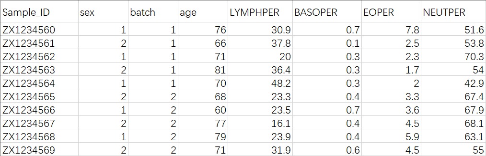
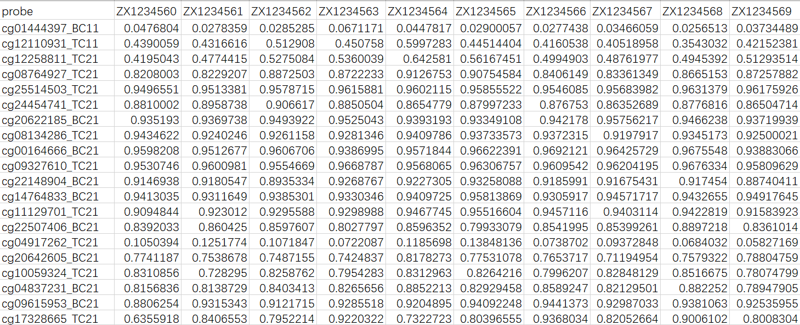
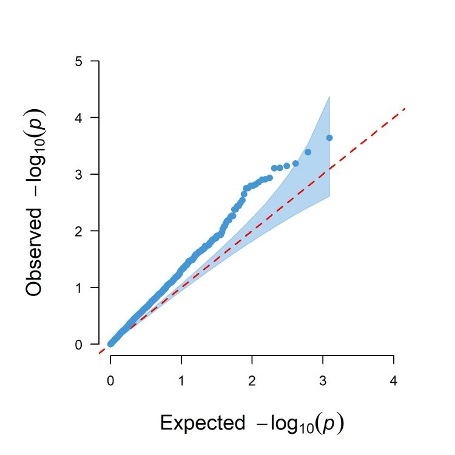
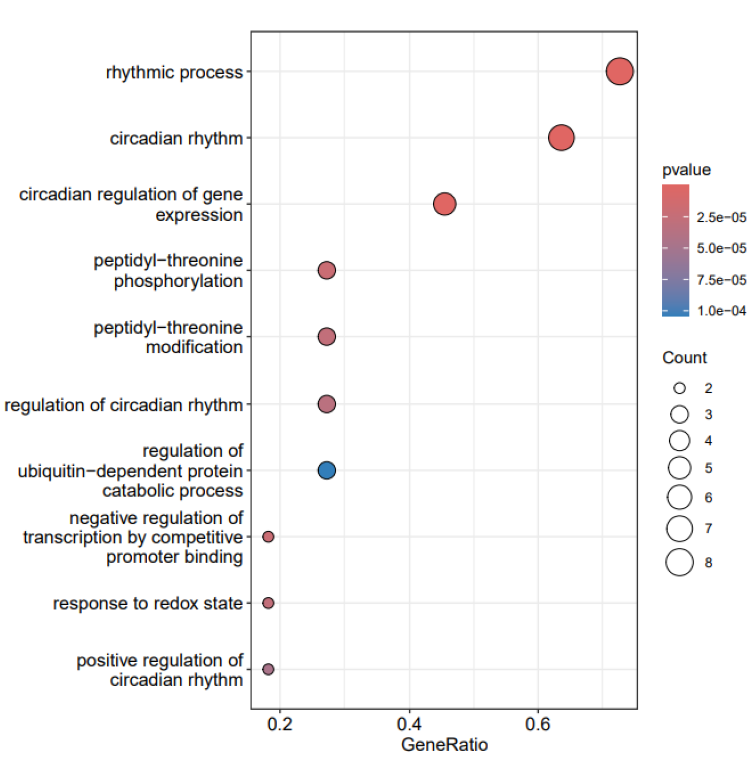

easyEWAS.RmdeasyEWAS is a user-friendly R package designed for conducting epigenome-wide association studies (EWAS). It provides multiple statistical analysis methods tailored for common EWAS study designs and accelerates computation efficiency through parallel computing. Specifically, easyEWAS emphasizes downstream analyses of EWAS, including internal validation using bootstrap, functional enrichment analysis of differentially methylated genes, and result visualization. easyEWAS is compatible with currently most cited Illumina high-density microarray platforms for genome-wide methylation profiling, including 27K, 450K, EPIC V1, EPIC V2, and MSA arrays.
Users can install the easyEWAS package by running the following code:
devtools::install_github("ytwangZero/easyEWAS")Sample data: Users need to prepare a sample file to store sample information, such as sample ID, exposure variables, covariates, etc. easyEWAS only supports .csv and .xlsx files, the sample format is as follows: 
Methylation data: Users also need to prepare a methylation file, requiring each row to represent a CpG site and each column to represent a sample. easyEWAS only supports .csv and .xlsx files, the data format is as follows: 
library(easyEWAS)Here, take the easyEWAS internal dataset as an example. After loading
easyEWAS, the user needs to use the initEWAS() function to
initialize an analysis module. This will generate a folder named
EWASresult under the working path specified by the user to
store the EWAS analysis results. The function also returns an R6 object
integrating all information, so the user needs to assign the result of
the function to a new name, such as res. If default, the
results will be stored in the current working path.
res <- initEWAS(outpath = "default")
#> Complete initializing the EWAS module! Your EWAS results will be stored in D:/R/Rwork/Rpackage/easyEWAS/vignettes/EWASresult
#> 2024-06-29 15:23:06.17881
#> 0.11 sec elapsed
Users can upload sample data and methylation data in two ways. One is to specify the path where the file is located, and the other is to assign the data set in the R environment directly to the parameters ExpoData and MethyData. If default, the data set inside the R package is called.
Users can view the sample data and the methylation data for the examples by running the following codes:
data("sampledata", package = "easyEWAS")
head(sampledata)
#> SampleName var cov1 cov2
#> 1 ZE10000001 76 2 20.96810
#> 2 ZE10000002 66 2 26.78373
#> 3 ZE10000003 71 2 28.26081
#> 4 ZE10000004 81 1 22.54459
#> 5 ZE10000005 70 1 21.66550
#> 6 ZE10000006 68 2 16.94033Here we view the first 6 columns of the methylation data inside the R package.
data("methydata", package = "easyEWAS")
head(methydata[,1:6])
#> # A tibble: 6 × 6
#> probe ZE10000001 ZE10000002 ZE10000003 ZE10000004 ZE10000005
#> <chr> <dbl> <dbl> <dbl> <dbl> <dbl>
#> 1 cg01444397_BC11 0.0477 0.0278 0.0285 0.0671 0.0448
#> 2 cg12110931_TC11 0.439 0.432 0.513 0.451 0.600
#> 3 cg12258811_TC21 0.420 0.477 0.528 0.536 0.643
#> 4 cg08764927_TC21 0.821 0.823 0.887 0.872 0.913
#> 5 cg25514503_TC21 0.950 0.951 0.958 0.962 0.960
#> 6 cg24454741_TC21 0.881 0.896 0.907 0.885 0.865Note the input parameter, which needs to be assigned the
res generated in the previous step. If the user chooses to read
data from external sources, the file paths need to be specified in the
parameters ExpoPath and MethyPath.
res <- loadEWAS(input = res,
ExpoData = "default",
MethyData = "default")
#> Sample data and methylation data for example have been loaded!
#> 2024-06-29 15:23:06.34943
#> 0.03 sec elapsed
This is an optional step where the user can transform certain variables in the sample dataset to a specified type. The function support both factor and numeric types.
res <- transEWAS(input = res, Vars = "cov1",TypeTo = "factor")
#> Variable types have been transformed successfully!
#> 0.02 sec elapsed
This is the core step of the analysis. The user can select models
based on the analysis requirements, including linear regression models,
linear mixed effects models, and Cox proportional risk models. The
function also supports parallel operations, and the number of physical
cores required for operations can be specified in the core
parameter. The result will be automatically stored in a custom named.csv
file. For the meaning of each parameter, refer to the manual of the R
package.
res <- startEWAS(input = res,
filename = "default",
chipType = "EPICV2", # "EPICV2", "EPICV1", "450K", "27K", "MSA"
model = "lm", # "lm", "lmer", "cox"
expo = "default",
cov = NULL,
random = NULL,
time = NULL,
status = NULL,
adjustP = TRUE,
core = 10)
#> It will take some time, please be patient...
#> Start the EWAS analysis...
#> Start multiple testing correction ...
#> Start CpG sites annotation ...
#> EWAS analysis has been completed!
#> You can find results in D:/R/Rwork/Rpackage/easyEWAS/vignettes/EWASresult.
#> 2024-06-29 15:23:17.078925
#> 10.64 sec elapsedUsers can view the analysis results by running the following code. For linear regression and linear mixed-effects models, when the exposure variable is continuous, the coefficient value (per unit, per IQR, per SD), standard error, significance P value, adjusted P value, and annotation information for the corresponding site are provided. For categorical variables, the coefficient for each class compared to the reference group is provided. For Cox proportional hazards models, HR values and confidence intervals are also provided.
head(res$result)
#> probe BETA BETA_perSD BETA_perIQR SE
#> 1 cg01444397_BC11 5.447755e-04 0.0050873534 0.0083078263 1.582456e-04
#> 2 cg12110931_TC11 1.893556e-03 0.0176828550 0.0288767218 6.035905e-04
#> 3 cg12258811_TC21 1.606180e-04 0.0014999213 0.0024494240 5.281461e-04
#> 4 cg08764927_TC21 -1.160395e-04 -0.0010836278 -0.0017696022 4.660786e-04
#> 5 cg25514503_TC21 2.532167e-05 0.0002364649 0.0003861554 8.094542e-05
#> 6 cg24454741_TC21 -9.076997e-05 -0.0008476499 -0.0013842420 1.254157e-04
#> SE_perSD SE_perIQR PVAL FDR Bonfferoni chr pos
#> 1 0.0014777669 0.002413245 0.0008487631 0.1161862 1 1 7784390
#> 2 0.0056365937 0.009204755 0.0022531189 0.1632849 1 1 7784577
#> 3 0.0049320606 0.008054228 0.7616838900 0.9158923 1 1 7784675
#> 4 0.0043524474 0.007107699 0.8039052062 0.9290912 1 1 7784835
#> 5 0.0007559039 0.001234418 0.7550791242 0.9126204 1 1 7785010
#> 6 0.0011711875 0.001912590 0.4709417633 0.7891571 1 1 7785177
#> relation_to_island
#> 1 Island
#> 2 Island
#> 3 Island
#> 4 Island
#> 5 Island
#> 6 Shore
#> gene
#> 1 PER3;PER3;PER3;PER3;PER3;PER3;PER3;PER3;PER3
#> 2
#> 3 PER3;PER3;PER3;PER3;PER3;PER3;PER3;PER3;PER3;PER3;PER3;PER3;PER3;PER3
#> 4 PER3;PER3;PER3;PER3;PER3;PER3;PER3;PER3;PER3;PER3;PER3;PER3;PER3;PER3
#> 5
#> 6
Visualize EWAS results based on the CMplot package,
including Manhattan plots, QQ plots, etc. Optional parameters are the
same as those in the CMplot function. When a user’s
exposure variable is a categorical variable, the user can specify which
class of p-values to use for results visualization. The
threshold parameter is used to plot a threshold line on the
Manhattan plot.
res <- plotEWAS(input = res,
file = "jpg",
p = "PVAL",
threshold = 0.05)
#> Ewas Visualization has completed!
#> You can find results in D:/R/Rwork/Rpackage/easyEWAS/vignettes/EWASresult.
#> 2024-06-29 15:23:17.727966
#> 0.58 sec elapsedHere is the Quantile-Quantile plot of the EWAS results. 
Bootstrap is a statistical resampling technique used for internal validation and estimation of uncertainty in statistical models. It’s particularly useful when the data is limited or when the underlying distribution of the data is not well known. Bootstrap can be a valuable tool for validating results from the EWAS. Users can run the following code to obtain the results of internal validation.
res <- bootEWAS(input = res,
filterP = "PVAL", # FDR, Bonferroni
cutoff = 0.001,
bootCI = "perc",
times = 100)
#> Bootstrap analysis for cg01444397_BC11...
#> Bootstrap analysis for cg01937505_BC21...
#> Bootstrap analysis for cg14151354_BC21...
#> Bootstrap analysis for cg13515269_TC21...
#> Bootstrap analysis for cg16047471_BC21...
#> Bootstrap analysis for cg06617514_TC21...
#> Bootstrap analysis for cg00200653_TC11...
#> Bootstrap analysis for cg24867447_BC21...
#> Bootstrap analysis for cg25069388_BC21...
#> Bootstrap for internal validation has been completed !
#> You can find results in D:/R/Rwork/Rpackage/easyEWAS/vignettes/EWASresult.
#> 2024-06-29 15:23:18.401566
#> 0.61 sec elapsedUsers can select CpG sites to validate in two ways. One is to set the
P-value column (PVAL, FDR, Bonfferoni) to be filtered and its filtering
cutoff value (default is 0.05), and the other is to specify the name of
the site to be validated directly in the CpGs parameter.
The result is stored in res$bootres. The function
ultimately provides the original statistical values for each CpG site
alongside their bootstrap-derived confidence intervals.
head(res$bootres)
#> # A tibble: 6 × 4
#> probe original lower_CI upper_CI
#> <chr> <dbl> <dbl> <dbl>
#> 1 cg01444397_BC11 0.000545 0.000118 0.000958
#> 2 cg01937505_BC21 -0.00111 -0.00177 -0.000522
#> 3 cg14151354_BC21 -0.000749 -0.00113 -0.000307
#> 4 cg13515269_TC21 -0.00142 -0.00227 -0.000712
#> 5 cg16047471_BC21 -0.00190 -0.00268 -0.000972
#> 6 cg06617514_TC21 -0.00145 -0.00229 -0.000869
easyEWAS provides two enrichment analysis methods (GO and KEGG) based
on the clusterProfiler package. Users can filter the
sites and their corresponding genes for enrichment analysis using the
filterP and cutoff parameters. The analysis
results are stored in res$enrichresult. Additionally, the
function can visualize the enrichment analysis results, including both
dotplot and barplot.
res <- enrichEWAS(input = res,
method = "GO",
filterP = "PVAL",
cutoff = 0.01,
plot = TRUE,
plotType = "dot",
plotcolor = "pvalue",
showCategory = 10)
#> It will take some time, please be patient...
#> Start enrichment analysis ...
#> Start result visualization ...
#> Saving 7.29 x 4.51 in image
#> Enrichment analysis has been completed !
#> You can find results in D:/R/Rwork/Rpackage/easyEWAS/vignettes/EWASresult.
#> 2024-06-29 15:23:39.434813
#> 20.95 sec elapsedThe result is stored in res$enrichres.
head(res$enrichres)
#> ID
#> GO:0048511 GO:0048511
#> GO:0032922 GO:0032922
#> GO:0018107 GO:0018107
#> GO:0018210 GO:0018210
#> GO:2000058 GO:2000058
#> GO:0007623 GO:0007623
#> Description
#> GO:0048511 rhythmic process
#> GO:0032922 circadian regulation of gene expression
#> GO:0018107 peptidyl-threonine phosphorylation
#> GO:0018210 peptidyl-threonine modification
#> GO:2000058 regulation of ubiquitin-dependent protein catabolic process
#> GO:0007623 circadian rhythm
#> GeneRatio BgRatio pvalue p.adjust qvalue
#> GO:0048511 3/5 297/18888 3.759965e-05 0.009174315 0.003285022
#> GO:0032922 2/5 70/18888 1.344212e-04 0.016399389 0.005872085
#> GO:0018107 2/5 96/18888 2.531146e-04 0.018822885 0.006739860
#> GO:0018210 2/5 106/18888 3.085719e-04 0.018822885 0.006739860
#> GO:2000058 2/5 166/18888 7.545427e-04 0.036821685 0.013184641
#> GO:0007623 2/5 205/18888 1.147290e-03 0.037938586 0.013584567
#> geneID Count
#> GO:0048511 PER3/BHLHE41/CSNK2A1 3
#> GO:0032922 PER3/BHLHE41 2
#> GO:0018107 PRKAG2/CSNK2A1 2
#> GO:0018210 PRKAG2/CSNK2A1 2
#> GO:2000058 CSNK1A1/CSNK2A1 2
#> GO:0007623 PER3/BHLHE41 2Here, we can obtain a bubble plot of GO enrichment analysis. 
1. Hall P (1992). The Bootstrap and Edgeworth
Expansion. Springer, New York. ISBN 9781461243847.
2. https://CRAN.R-project.org/package=CMplot
3. Yu, G., Wang, L. G., Han, Y., & He, Q. Y.
(2012). clusterProfiler: an R package for comparing biological themes
among gene clusters. Omics : a journal of integrative biology, 16(5),
284–287. https://doi.org/10.1089/omi.2011.0118